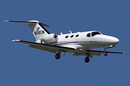
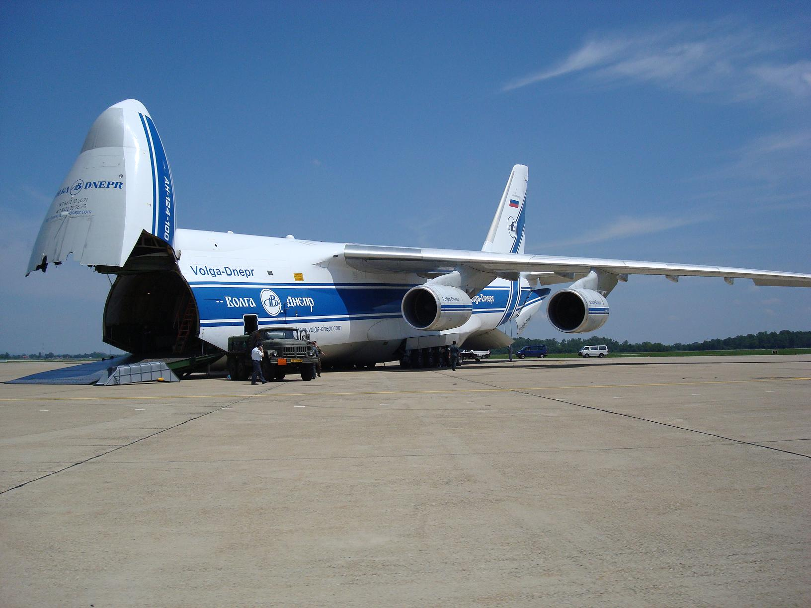
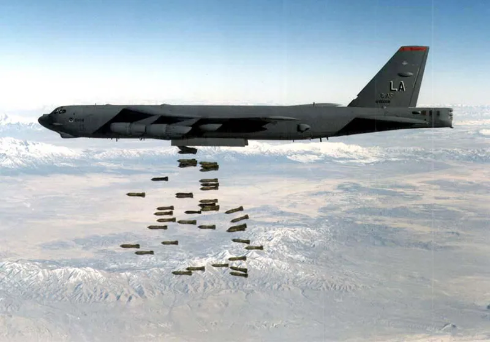

Types of aircraft There are a number of ways to identify aircraft by type. The primary distinction is between those that are lighter than air and those that are heavier than air.

A very light jet, entry-level jet or personal jet, previously known as a microjet, is a category of small business jets that seat four to eight people. VLJs are considered the lightest business jets and are approved for single-pilot operation.

A cargo aircraft is a fixed-wing aircraft that is designed or converted for the carriage of cargo rather than passengers. Such aircraft usually do not incorporate passenger amenities and generally feature one or more large doors for loading cargo.


A bomber A bomber is a military combat aircraft designed to attack ground and naval targets by dropping air-to-ground weaponry, launching torpedoes, or deploying air-launched cruise missiles. Soon after the first flight of the Wright Flyer, several militaries became interested in powered aircraft. In 1909 the United States Army purchased the Wright Military Flyer, a two-seat observation aircraft, for the Aeronautical Division, U.S. Signal Corps. It served until 1911, by which time powered aircraft had become an important feature in several armies around the world.[6] Airplanes performed aerial reconnaissance and tactical bombing missions in the Italo-Turkish war, and the First Balkan War saw the first naval-air operations. Photoreconnaissance and propaganda leaflet drops followed in the Second Balkan War.
Home Introduction History Types of Airplane The Anatomy of Airplane Summary